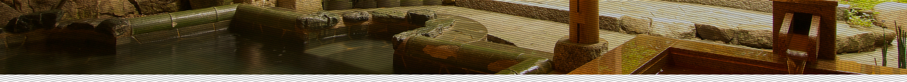
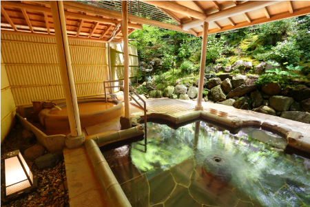
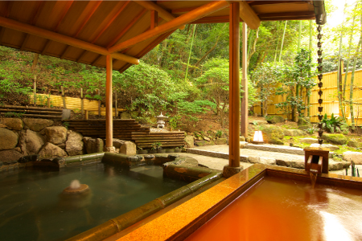
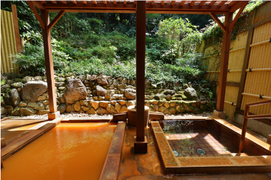
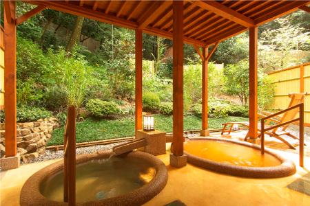
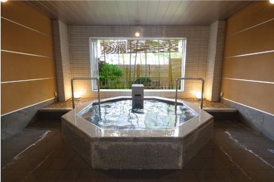
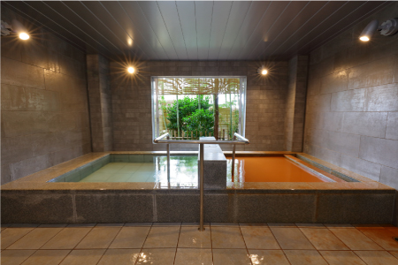
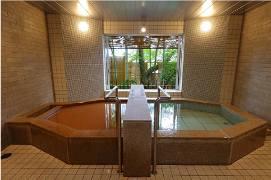
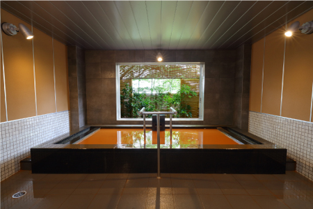

프라이베트 온천여약
프라이빗 온천 예약 정보
예약하신 프라이빗 온천一の湯
예약가능한 시간16:00～16:45
프라이빗 온천 열쇠과 수건을 드리겠습니다. 프라이빗 온천 이용 시간에 되면 프런트까지 와 주십시오.
노천탕 안내
"1번 온천~4번 온천"의 프라이빗 노천탕은 예약제입니다.본 사이트를 통해 예약이 가능합니다.
여약
1번 온천 (금천・음천)

대형 은천과 원형금천이 설치돼여있습니다 아리마온천의 아름다움을 충분히 즐겨주십시오
2번 온천 (금천・음천)

대형 은천과 사각형 금천,일본식 정원의 아름다움이 특징
3번 온천 (금천・음천)

2～3명이 사용가능한 사각형 금천
4번 온천 (금천・음천)

원형 금천과 은천이 설치돼여 있습니다 생기와 록색으로 포웅돼여있는 산속 온천의 즐거운 체험
실내 목욕탕 안내
번호5～8번의 프라이빗 온천 이용시에는 프론트까지 연락주십시오
5번 온천 (음천)

팔각형 모양이 특징인 음천의 프라이빗 온천입니다.
6번 온천 (금천・음천)

금천과 은천의 사각형 목욕통이 설치돼여 있습니다
7번 온천 (금천・음천)

금천과 음천 온천이 있습니다.
8번 온천 (금천・음천)

네모난 목욕통의 금천을 만끽하세요.
번호5～8번의 프라이빗 온천 이용시에는 프론트까지 연락주십시오
내선 번호：9
프라이베트 온천예약
(번호1～4)
사이트를 통해서는 프라이빗 온천 예약은 1실 1회까지입니다.
추가로 이용하시는 경우 프론트 9번까지 문의해주세요.
| 시간 | 1 | 2 | 3 | 4 |
|---|---|---|---|---|
| 15:00～15:45 | × | × | × | × |
| 16:00～16:45 | × | × | × | × |
| 17:00～17:45 | × | × | × | × |
| 18:00～18:45 | × | × | × | × |
| 19:00～19:45 | × | × | × | × |
| 20:00～20:45 | × | × | × | × |
| 21:00～21:45 | × | × | × | × |
| 22:00～22:45 | × | × | × | × |
| 23:00～23:45 | × | × | × | × |
| 다음 6:30～7:15 | × | × | × | × |
| 다음 7:30～8:15 | × | × | × | × |
| 다음 8:30～9:15 | × | × | × | × |
| 다음 9:30～10:15 | × | × | × | × |
원하시는 프라이베트 온천：1번 온천
원하시는 시간：16:00～16:45